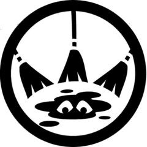

MTF Alpha-45 “Janitors”
Task Force Mission: Mobile Task Force Alpha-45 specializes in conducting cleanup and repair following destructive missions by other Task Forces.

Task Force Mission: Mobile Task Force Alpha-45 specializes in conducting cleanup and repair following destructive missions by other Task Forces.